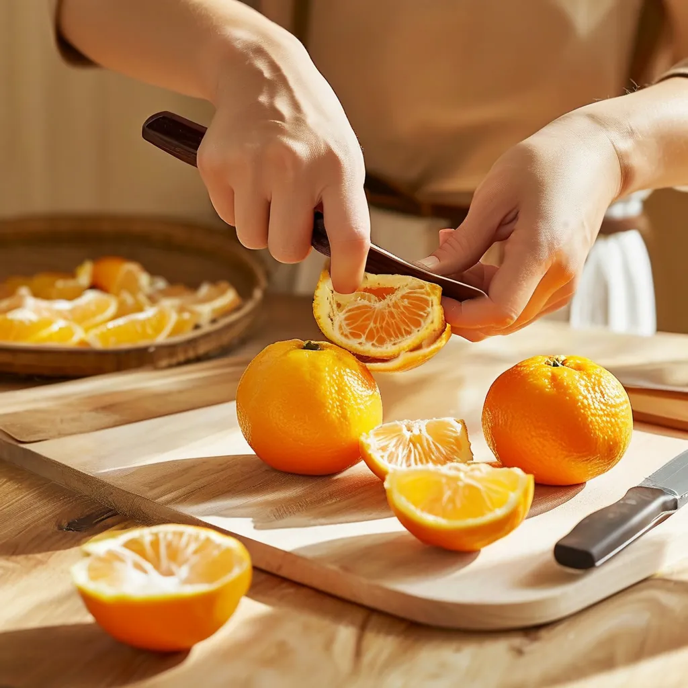
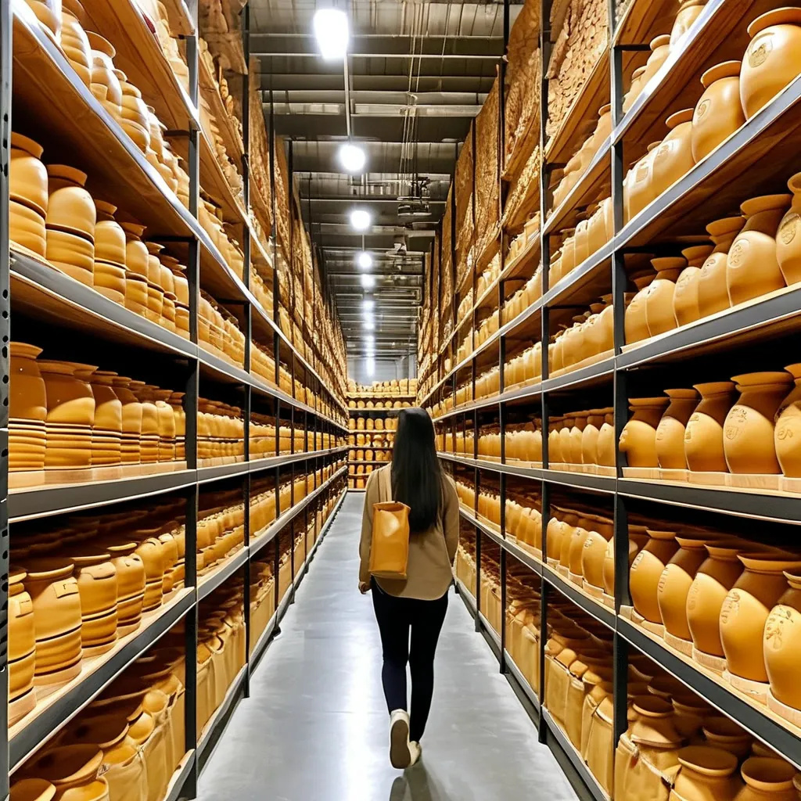
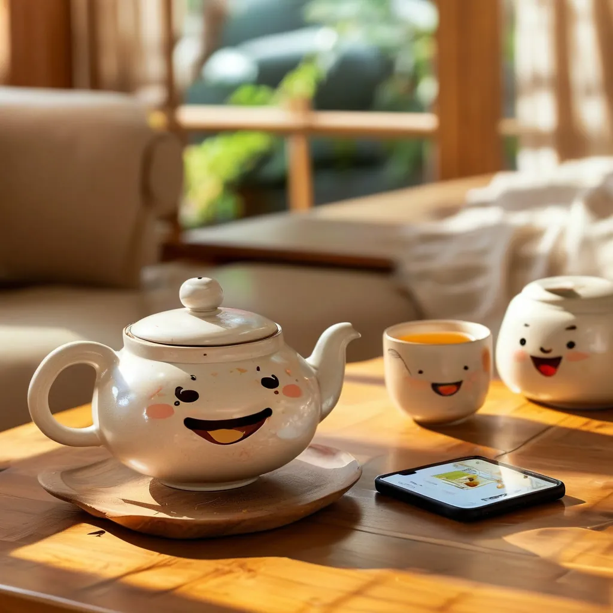

📅 直播安排：每天 07:00–12:00（GMT+8）
每天（GMT+8）
07:00 - 12:00
🌅 主題：清晨柑園直擊！帶你看新會的第一縷陽光
每天（GMT+8）
07:00 - 12:00
🍊 主題：現場開皮！從摘柑到翻曬全過程

每天（GMT+8）
07:00 - 12:00
🍵 主題：十年陳皮煮飲教學，直播間現場泡
每天（GMT+8）
07:00 - 12:00
💬 主題：你問我答！陳皮鑑別、選購、保存問題全解答
每天（GMT+8）
07:00 - 12:00
🏭 主題：帶你看倉庫！滢滢家的幹倉長什麼樣

💬 粉絲們在直播間説的話

李
"滢滢，上次買的梅江十年到了，老公説是他喝過最好的陳皮茶。再給我留兩斤！"
昨天 15:32
王
"看了你那個濕倉做舊的視頻，我回去檢查了一下之前買的，果然中招了。以後只認滢滢家。"
前天 20:15
張
"直播間買了三次了，每次品質都很穩定。最打動我的是滢滢説'不滿意就退'，敢這麼説的一定是真貨。"
8月14日 16:08
陳
"公司中秋節要給客户送禮，滢滢幫我搭配了30份禮盒，包裝、賀卡、發票全搞定。太省心了！"
8月12日 11:42
👥 加入滢滢的陳皮交流羣
羣裏每天分享陳皮小知識，滢滢也會在羣裏回答大家的問題。買不買沒關係，交個朋友。
📢 開播提醒，不錯過每次直播
🎁 羣內專屬福利，不定期抽獎
💬 老粉帶新粉，不懂就問
📦 新品上架，羣裏第一時間知道
加滢滢微信，備註"進羣"，滢滢拉你進來：
微信號：chenpi-yingying